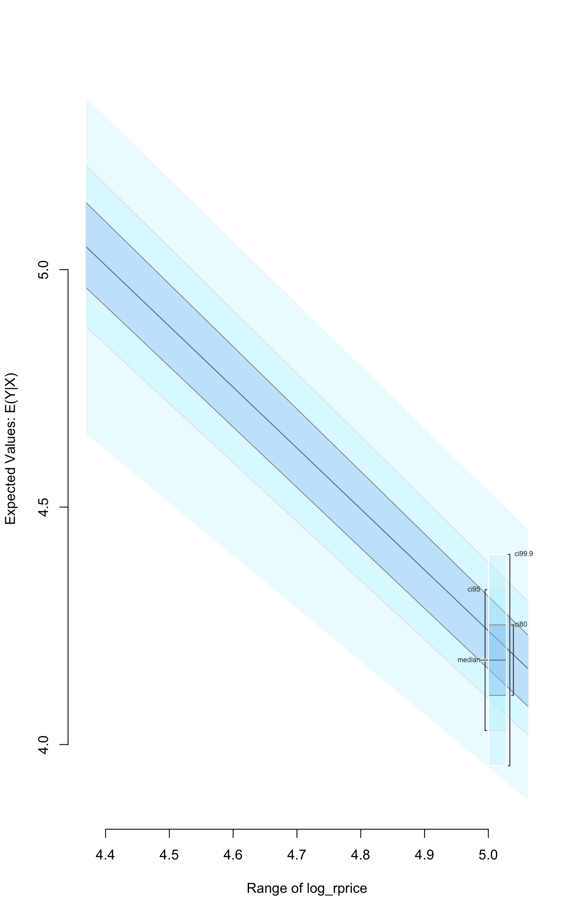

Built using Zelig version 5.1.2.9000
Instrumental Variable Regression (via 2 Stage Least Squares) for Continuous Dependent Variables with ivreg.
Instrumental variable regression is used when the correlation between the independent variables and the dependent variable does not reflect the true relationship because the independent variables are correlated with the error term. This can happen because of ommitted variables, reverse causation, and measurement error. Such variables are often referred to as “endogenous” (as opposed to “exogenous” variables that are not correlated with the error term). It may be possible to use instruments–other variables that cause changes in the endogenous variables, but not the dependent variable–to recover the endogenous variabless effects on the independent variable.
z.out <- zelig(Y ~ X1 + X2 | Z1 + Z2 + Z3, model = "ivreg", weights = w,
data = mydata)
x.out <- setx(z.out)
s.out <- sim(z.out, x = x.out)Note that | separates the regressors (e.g. X1 and X2) from the instruments (e.g. Z1, Z2, Z3). Exogenous regressors have to be included as instruments for themselves.
Load Zelig and other packages used in the example:
library(Zelig)
library(dplyr) # for the pipe operator %>%Before estimating the model, let’s attach the example data and make some transformations to it. Notably, zivreg does not currently support logging regressors in the zelig call. To get around this, we simply find the logged values before estimating the model:
# load and transform data
data("CigarettesSW")
CigarettesSW$rprice <- with(CigarettesSW, price/cpi)
CigarettesSW$rincome <- with(CigarettesSW, income/population/cpi)
CigarettesSW$tdiff <- with(CigarettesSW, (taxs - tax)/cpi)
# log second stage independent variables, as logging internally for ivreg is
# not currently supported
CigarettesSW$log_rprice <- log(CigarettesSW$rprice)
CigarettesSW$log_rincome <- log(CigarettesSW$rincome)Now we can estimate the model and summarize the coefficients:
z.out1 <- zelig(log(packs) ~ log_rprice + log_rincome |
log_rincome + tdiff + I(tax/cpi),
data = CigarettesSW, subset = year == "1995",
model = "ivreg")## How to cite this model in Zelig:
## Christian Kleiber and Achim Zeileis. 2008.
## ivreg: Instrumental-Variable Regression
## in Christine Choirat, Christopher Gandrud, James Honaker, Kosuke Imai, Gary King, and Olivia Lau,
## "Zelig: Everyone's Statistical Software," http://zeligproject.org/summary(z.out1)## Model:
##
## Call:
## z5$zelig(formula = log(packs) ~ log_rprice + log_rincome | log_rincome +
## tdiff + I(tax/cpi), data = CigarettesSW, subset = year ==
## "1995")
##
## Residuals:
## Min 1Q Median 3Q Max
## -0.6006931 -0.0862222 -0.0009999 0.1164699 0.3734227
##
## Coefficients:
## Estimate Std. Error t value Pr(>|t|)
## (Intercept) 9.8950 1.0586 9.348 4.12e-12
## log_rprice -1.2774 0.2632 -4.853 1.50e-05
## log_rincome 0.2804 0.2386 1.175 0.246
##
## Residual standard error: 0.1879 on 45 degrees of freedom
## Multiple R-Squared: 0.4294, Adjusted R-squared: 0.4041
## Wald test: 13.28 on 2 and 45 DF, p-value: 2.931e-05
##
## Next step: Use 'setx' methodWe can then simulate and plot the expected value of the log of the packs response variable across the range of the observed rprice regressor values:

To conduct standard diagnostic tests on the estimated model using functionality in the AER package, exatract the fitted model object with the from_zelig_model() function.
One stage (ordinary) least squares is given by:
\[ Y_i \; \sim \; f(y_i \mid \mu_i, \sigma^2). \]
\[ \mu_i = x_i \beta, \]
where \(x_i\) is the vector of covariates, and \(\beta\) is the vector of coefficients.
The least squares estimator is the best linear predictor of a dependent variable given \(x_i\), and minimizes the sum of squared residuals, \(\sum_{i=1}^n (Y_i-x_i \beta)^2\).
In two-stage least squares uses these components twice to uncover the effect of the endogenous variables on the continuous dependent variable.
In the first stage, each endogenous variable is estimated with least squares regressions that include all of the exogenous variables (the instruments and any other exogenous variables used to estimate the dependent variable). The predicted values of the endogenous variables from these models (and the exogenous, non-instrumental variables) are then used in the second stage regression.
qi$ev) is the mean of simulations from the stochastic component of the second stage,\[ E(Y) = x_i \beta, \]
given a draw of \(\beta\) from its sampling distribution.
att.ev) for the treatment group is\[ \frac{1}{\sum_{i=1}^n t_i}\sum_{i:t_i=1}^n \left\{ Y_i(t_i=1) - E[Y_i(t_i=0)] \right\}, \]
where \(t_i\) is a binary explanatory variable defining the treatment (\(t_i=1\)) and control (\(t_i=0\)) groups. Variation in the simulations are due to uncertainty in simulating \(E[Y_i(t_i=0)]\), the counterfactual expected value of \(Y_i\) for observations in the treatment group, under the assumption that everything stays the same except that the treatment indicator is switched to :math: \(t_i=0\).
ivreg is from Christian Kleiber and Achim Zeileis (2008). Applied Econometrics with R. New York: Springer-Verlag. ISBN 978-0-387-77316-2. URL https://CRAN.R-project.org/package=AER. For more information use ?AER::ivreg.
Greene, W. H. (1993) Econometric Analysis, 2nd ed., Macmillan.